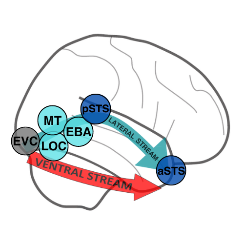
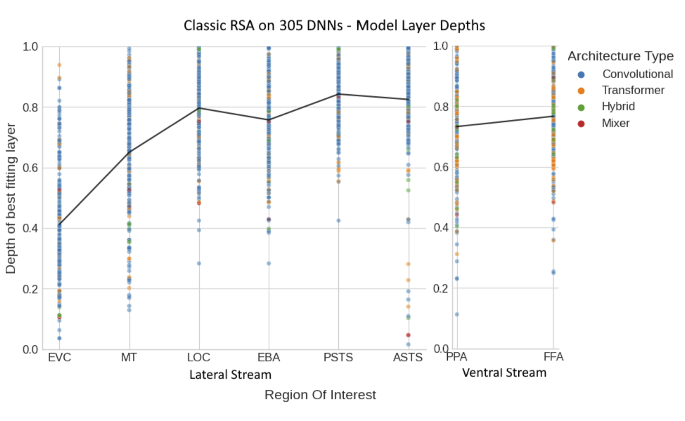
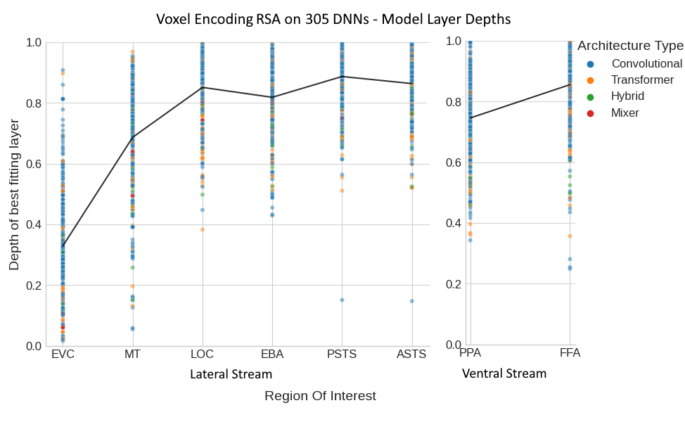
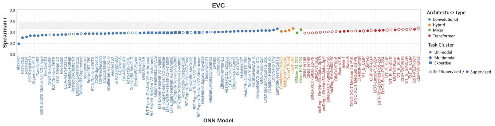
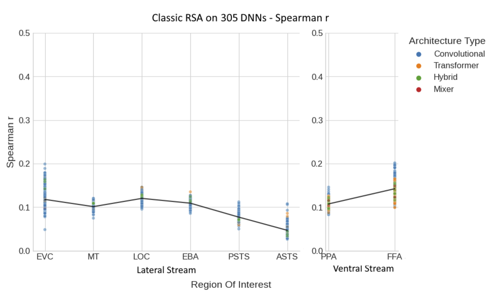
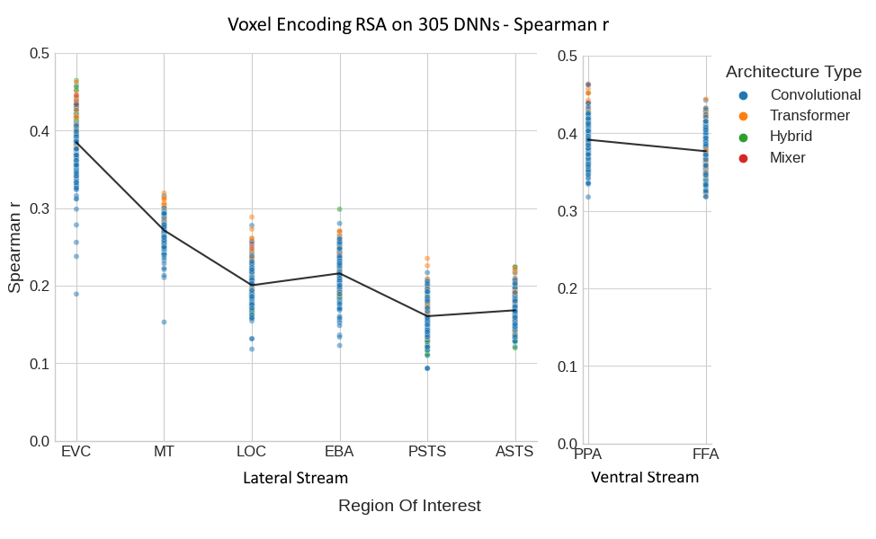
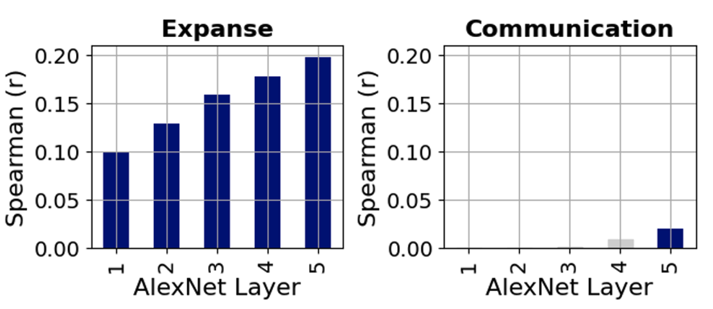
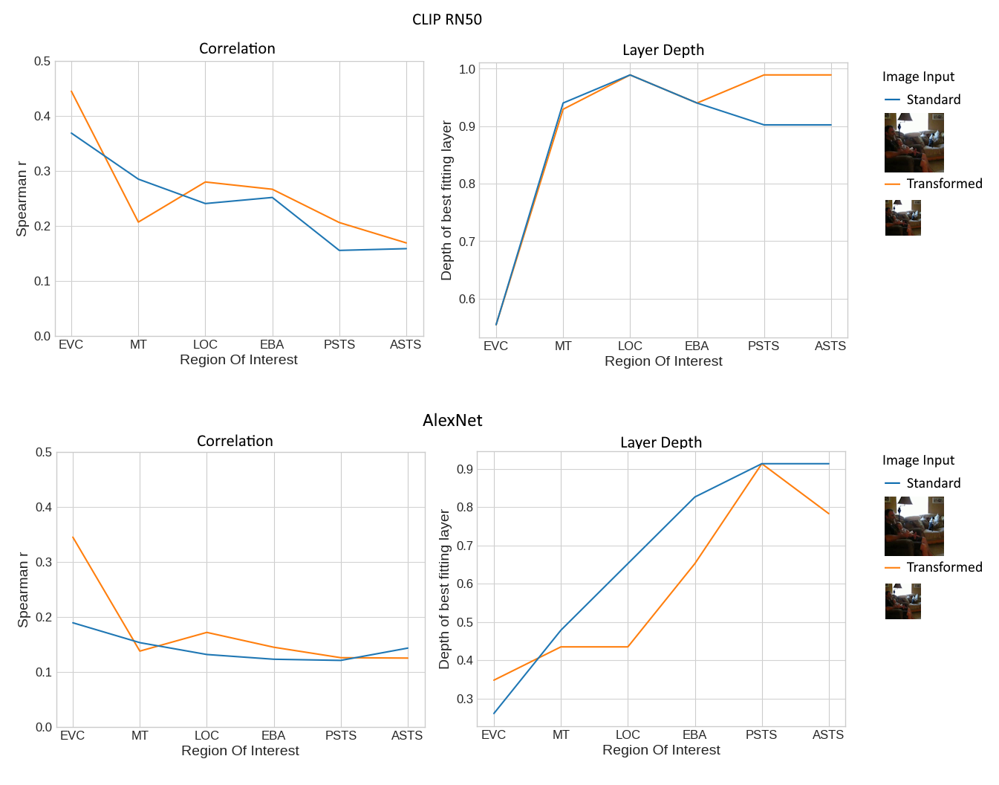

DNN features and fMRI responses to 3-second social videos are compared with classic RSA (cRSA) and voxel-encoding RSA (veRSA).
00Overview
DNNs are strong models of the ventral stream for static images. Are they also good models of the lateral stream, which processes dynamic social scenes? We find a feed-forward hierarchy there too — but correlations fall well short of the noise ceiling.
300+
DNNs with diverse architectures, objectives & training sets
200
naturalistic social videos
8
lateral & ventral regions of interest

Two visual streams. The ventral stream supports object and scene recognition; the recently proposed lateral stream is thought to specialize in dynamic, social vision.
01A hierarchy in the lateral stream
Earlier DNN layers match earlier visual areas, middle layers match mid-level regions, and later layers match the most anterior regions along the STS.
Pairwise permutation tests confirm significant differences in the average depth of the best-matching layer between regions.
Early layersEVC · MT
Middle layersEBA · LOC
Late layerspSTS · aSTS

Best-fitting layer depth (0 = first layer, 1 = last) per ROI, colored by architecture; the black line is the mean across models.

Lateral vs. ventral streams. Comparing hierarchical correspondence across the two pathways.
02Explore by brain region
veRSA results for every DNN in each region. Dots are individual models (color = architecture, shape = training); gray bars mark split-half reliability. Pick a region:
Regions · lateral → ventral
Early visual cortex (EVC). Best matched by early DNN layers.
Middle temporal area (MT). Motion-sensitive; also best matched by earlier layers.
Extrastriate body area (EBA). Mid-level lateral region, best matched by middle layers.
Lateral occipital complex (LOC). Mid-level lateral region, best matched by middle layers.
Posterior superior temporal sulcus (pSTS). Anterior lateral region, best matched by later layers; DNN correlations are well below the noise ceiling.
Anterior superior temporal sulcus (aSTS). The most anterior region, best matched by the latest layers.
Parahippocampal place area (PPA). Ventral, scene-selective. The best DNNs approach the noise ceiling in the ventral stream.
Fusiform face area (FFA). Ventral, face-selective. The best DNNs approach the noise ceiling in the ventral stream.

03Overall DNN–brain correspondence
Network type matters surprisingly little: there are no systematic differences between architectures in either hierarchical correspondence or absolute
correlation, suggesting that learning objective and training data play little role in matching the lateral stream.

cRSA. Spearman correlation of each DNN per ROI (blue: convolutional, orange: transformer, green: hybrid, red: mixer); black line is the mean.

veRSA. The same models evaluated with voxel-wise encoding RSA.

AlexNet vs. behavioral ratings. cRSA between each conv layer and ratings of spatial expanse (left) and communication (right); blue bars are significant (p < 0.05, permutation test).
04What's next: input transformations

Input transformations. veRSA for CLIP RN50 and AlexNet with vs. without transformations to input images during feature extraction.
This work grew into our ICLR 2025 paper, which extends the benchmark to 350+ image, video, and language models.
05Citation
@article{garcia2024largescale,
title = {Large-scale Deep Neural Network Benchmarking in
Dynamic Social Vision},
author = {Garcia, Kathy and Conwell, Colin and McMahon, Emalie
and Bonner, Michael F. and Isik, Leyla},
journal = {Journal of Vision},
volume = {24},
number = {10},
pages = {716},
year = {2024},
doi = {10.1167/jov.24.10.716}
}